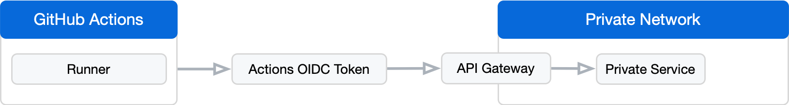

You can use OpenID Connect (OIDC) tokens to authenticate your workflow.
With GitHub Actions, you can use OpenID Connect (OIDC) tokens to authenticate your workflow outside of GitHub Actions. For example, you could run an API gateway on the edge of your private network that authenticates incoming requests with the OIDC token and then makes API requests on behalf of your workflow in your private network.
The following diagram gives an overview of this solution's architecture:

It's important that you verify not just that the OIDC token came from GitHub Actions, but that it came specifically from your expected workflows, so that other GitHub Actions users aren't able to access services in your private network. You can use OIDC claims to create these conditions. For more information, see OpenID Connect.
The main disadvantages of this approach are that you must implement the API gateway to make requests on your behalf, and you must run the gateway on the edge of your network.
The following advantages apply.
For more information, see a reference implementation of an API Gateway in the github/actions-oidc-gateway repository. This implementation requires customization for your use case and is not ready-to-run as-is). For more information, see OpenID Connect.